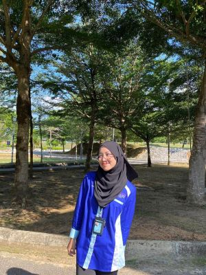
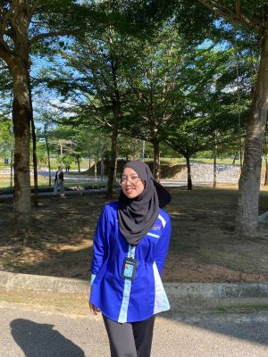
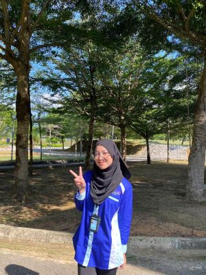

Intro
Hello ! Its Me Maisarah <3
  
Welcome to my digital space! 🌟
- Hello, I'm Nur Maisarah Binti Nordin. As a 21-year-old student of CDIM2602A at Universiti Teknologi MARA, I'm embarking on an exciting journey of learning and self-discovery. Passionate about technology and design, I'm constantly seeking new opportunities to expand my knowledge and skills in these fields.
This website is my creative outlet and learning hub, where I document my educational journey, share my projects and experiences, and connect with fellow enthusiasts. Through this platform, I aim to inspire others to embrace lifelong learning and pursue their passions with dedication and enthusiasm.
I created this website with the intention of not only showcasing my skills and projects but also sharing the lessons I've learned along the way. As I continue to navigate the ever-evolving landscape of technology and design, I hope to encourage others to join me on this journey of growth and discovery.
So, whether you're a fellow student, a seasoned professional, or simply someone with a curious mind, I invite you to explore my website and join me in the pursuit of knowledge and creativity. Together, let's learn, grow, and make a difference in the world.
Feel free to reach out if you have any questions, suggestions, or just want to say hello. Let's connect and inspire each other to achieve our goals and aspirations!